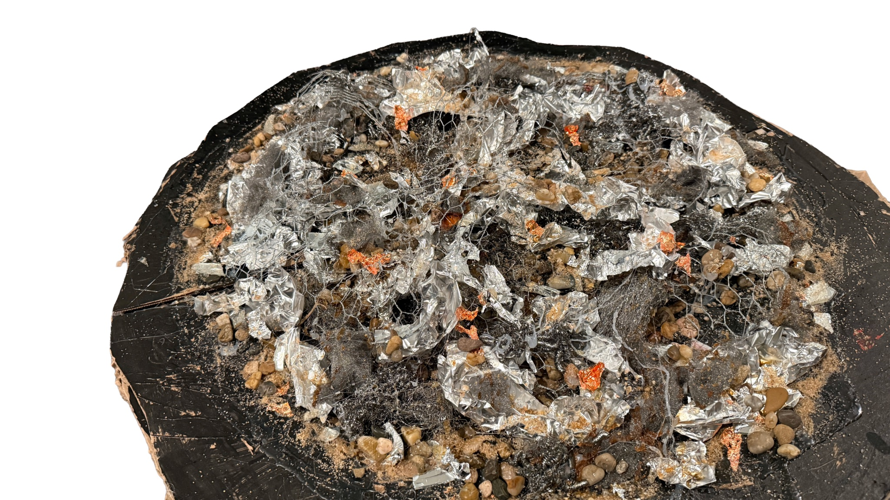
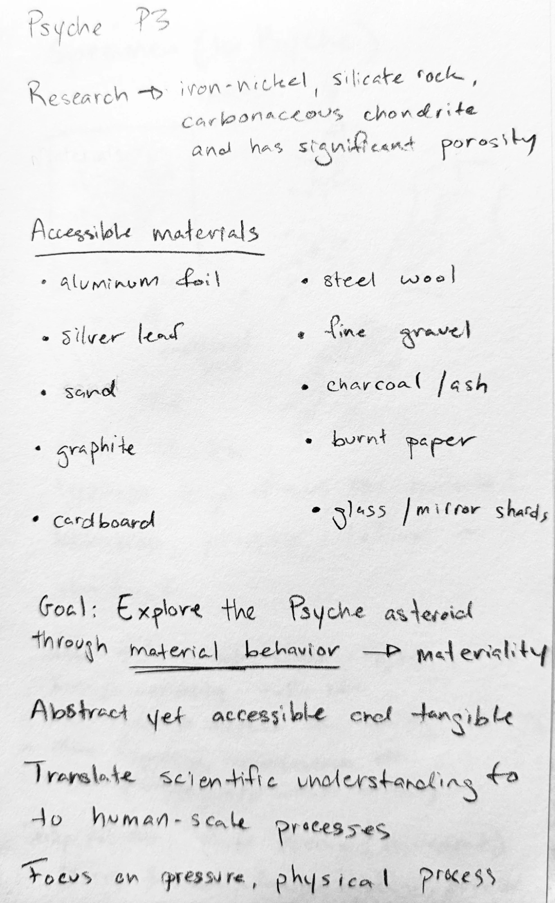
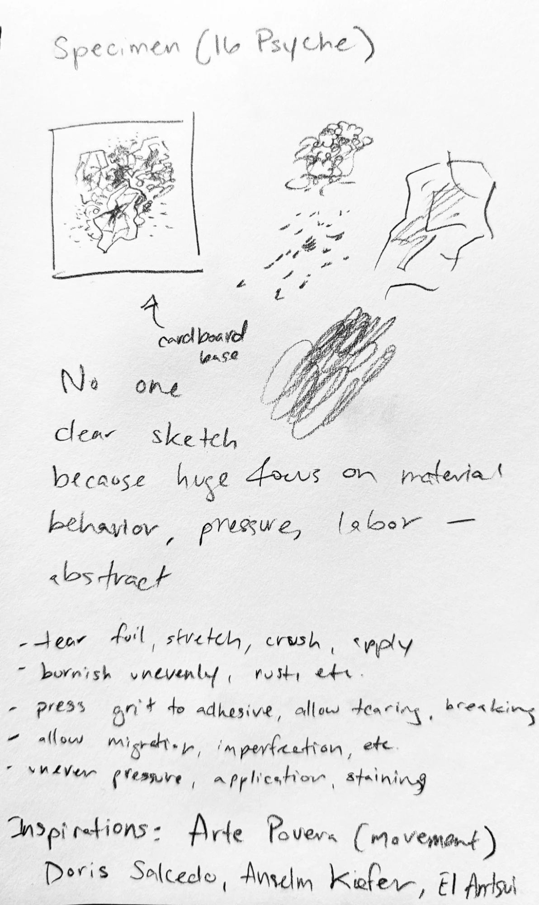
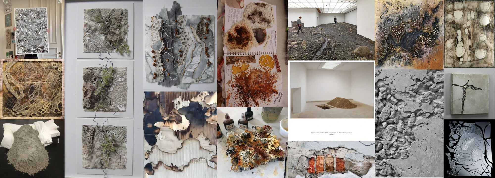
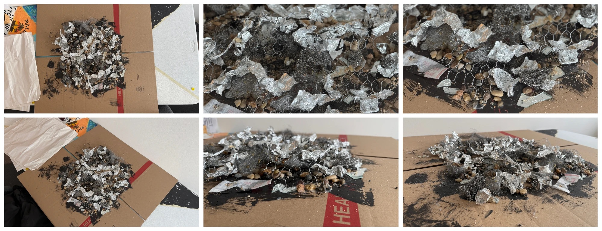
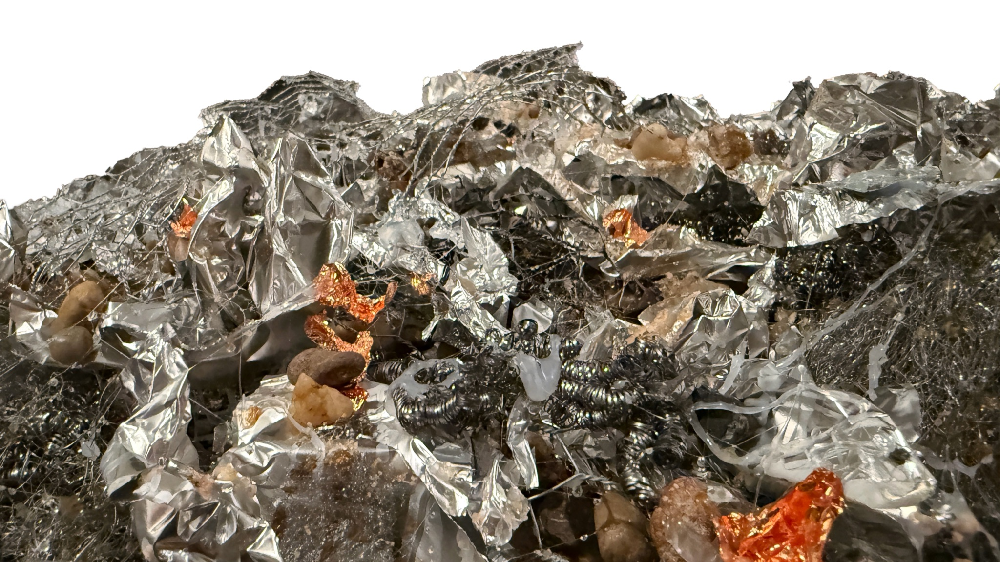
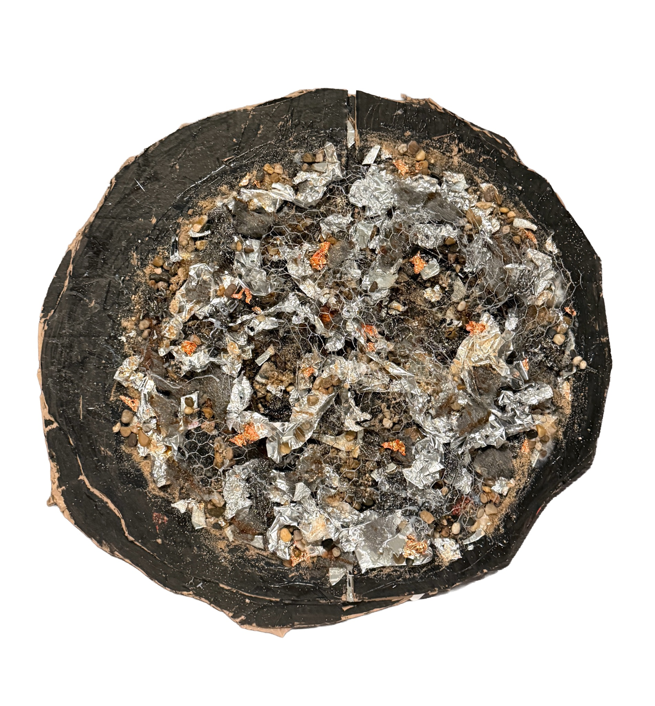

Sculpture · Mixed media · NASA Psyche Inspired
Specimen (16 Psyche)
An abstract, materially driven exploration of the asteroid 16 Psyche. While the work visually represents the asteroid, it does so without spectacle or polish.

01
About the work
At first glance, it may resemble a compressed pile of industrial debris—foil, wire, grit, and fractured surfaces. This ambiguity is intentional.
Psyche exists millions of miles away, known only through remote sensing and evolving scientific hypothesis. Current research suggests it is not a solid metal core as once believed, but a porous composite body composed of iron-nickel metal, silicate rock, and carbonaceous material. Rather than illustrating these findings, I translated them into physical behavior at a human scale.
02
Research

Research and accessible materials 
No one clear sketch
The sculpture is constructed from accessible materials: chicken wire, steel wool, gravel, sand, rocks, aluminum foil, copper and silver foil, charcoal, mirror fragments, and painted cardboard. These are ordinary, tactile substances—things that can be held, torn, pressed, and broken. By working with materials that are familiar and inexpensive, I collapse the distance between a distant asteroid and the human body. Imitation here is not about accuracy; it is about access.
03
Moodboard

04
Making

The piece was built through force and guesswork. Layers were compressed, fractured, and allowed to fail. I worked without a predetermined image, trusting material response over visual control. This was my first fully abstract work, and the uncertainty of that process mirrors the way Psyche itself is understood—through incomplete data and revision.
During construction, I cut my hand on the wire and metal. A bandage wrapper remains embedded beneath the surface, an unseen layer within the structure. Physical labor, impact, and vulnerability are not metaphors in this work; they are present in its construction.
05
Final

Detail 
From above
Making Psyche at a human scale matters. It transforms something astronomically distant and conceptually abstract into something that can be physically confronted. What we cannot touch directly can still be approached through imitation. In compressing metal, grit, and void into a single accessible object, the sculpture invites viewers to reconsider how knowledge of the unfamiliar is built—through translation, material, and the body.
“Specimen (16 Psyche) is not a replica. It is an approximation shaped by force, labor, and accessibility.”